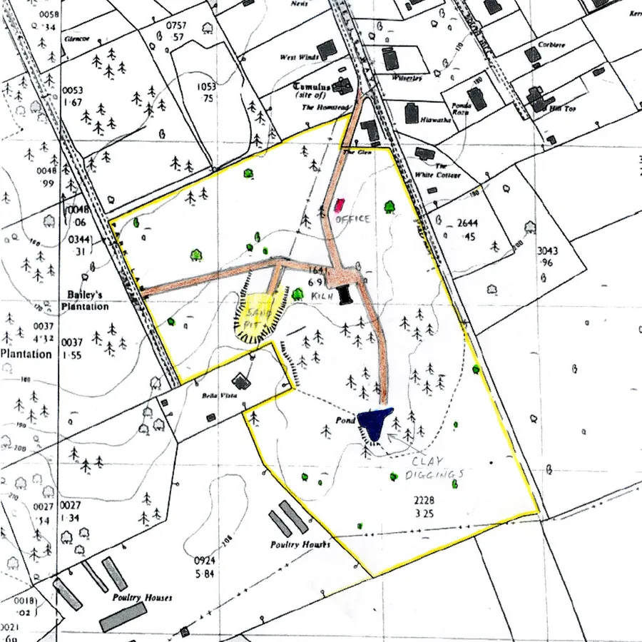
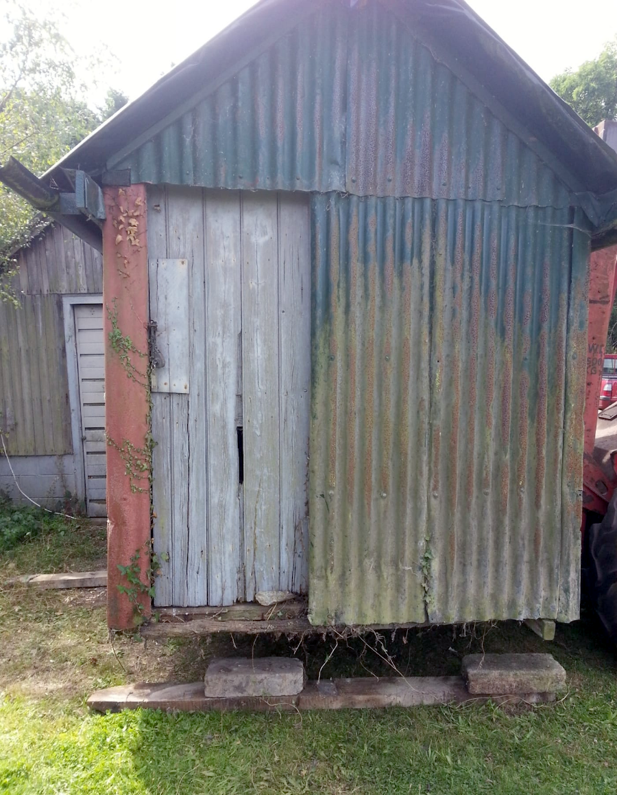
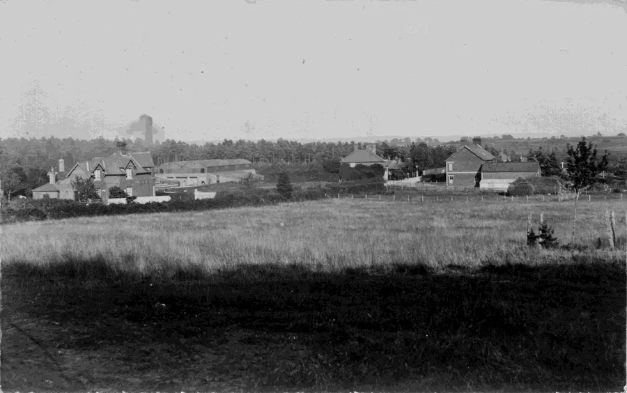
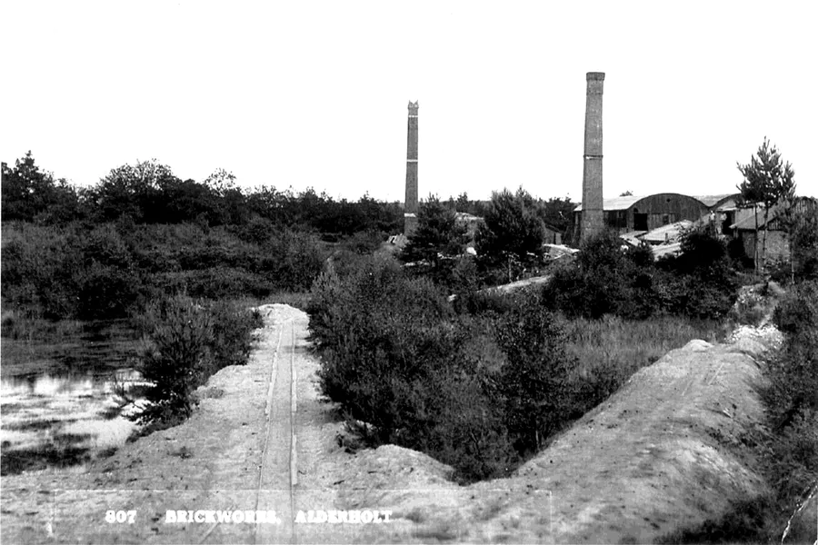
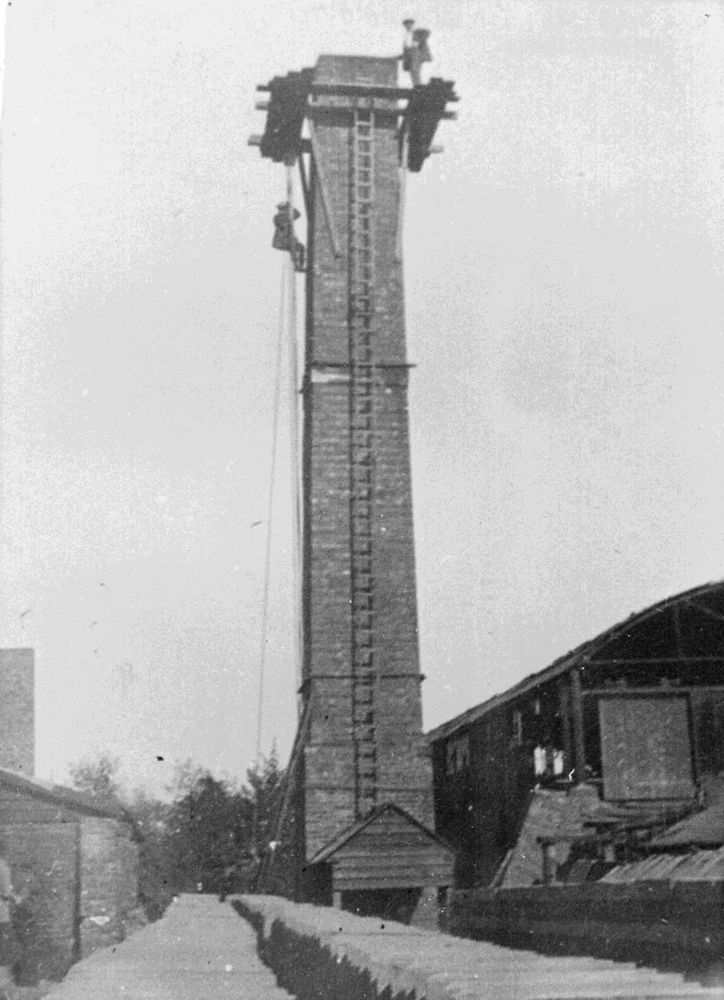
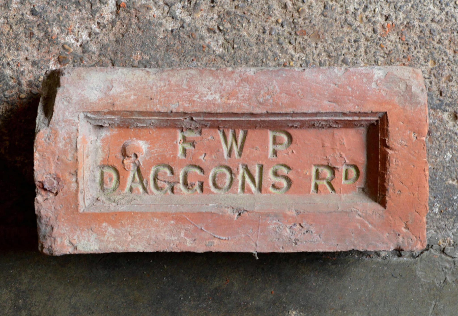
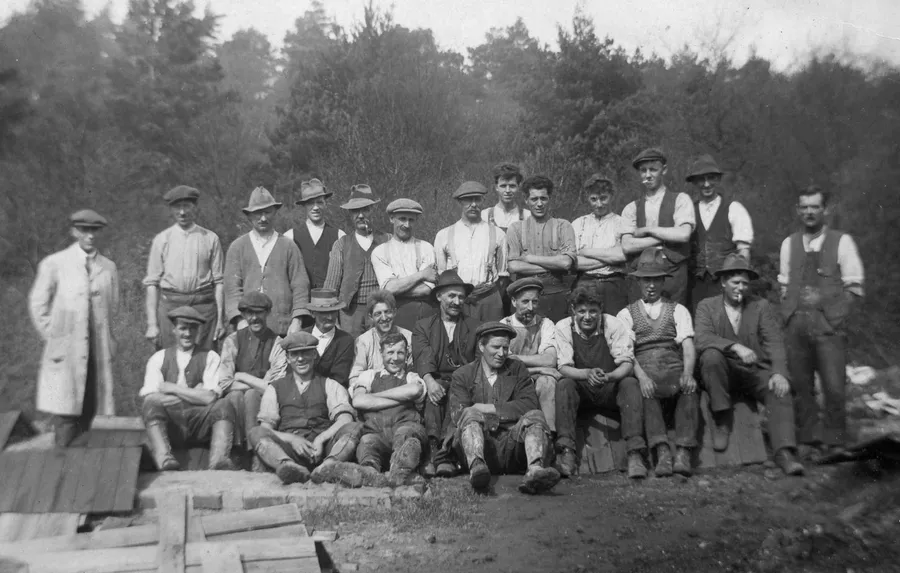
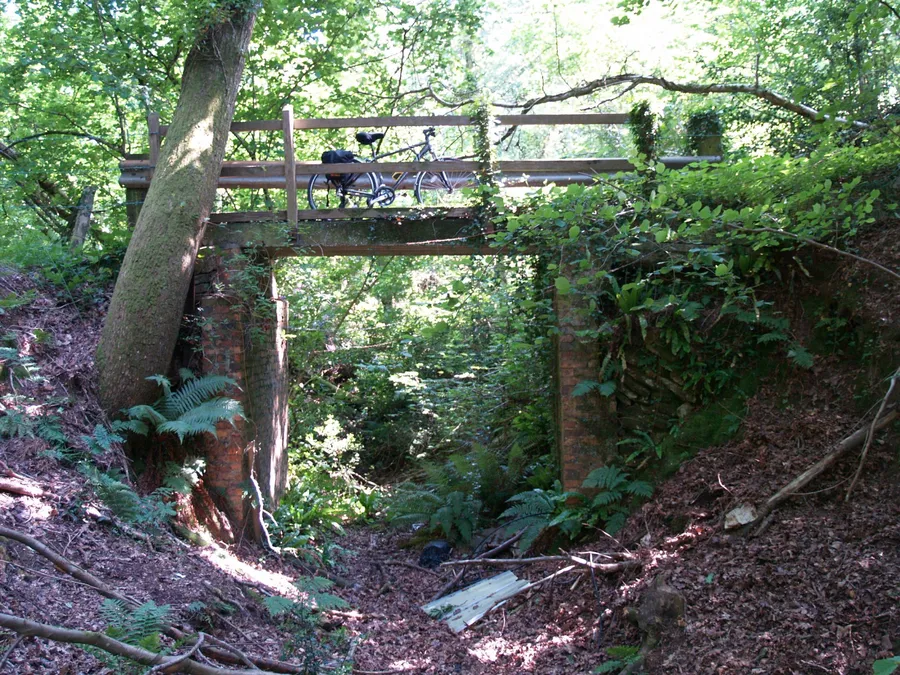
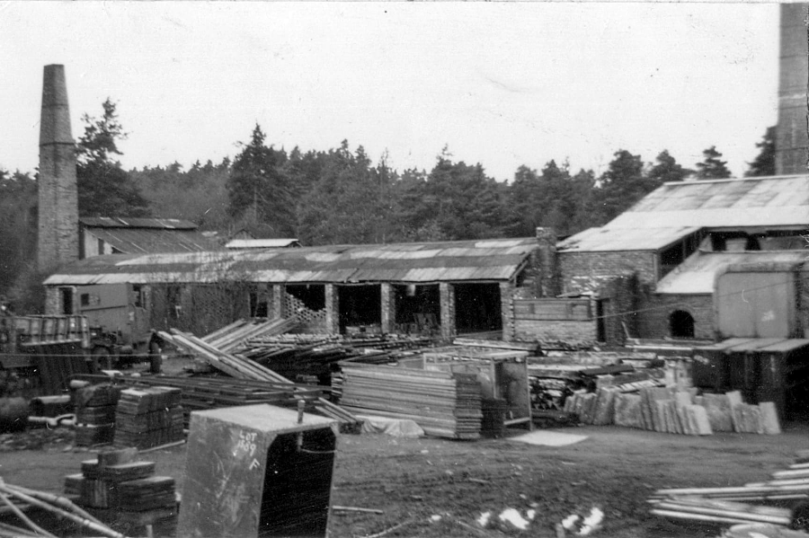

Brickworks — Part II
by Adrian King

Billetts Brickworks. (SU124125)
This was the brickworks that used to be situated in the Camel Green and Park Lane area. An area of about 10 acres.
Shannon Rake operated the yard from 1915–31 but he seems to have had financial problems and G. Billett and Sons were operating this brickyard by 1939. Shannon Rake also had yards in Sandleheath and he built Fernlea in Camel Green Road and was living there in KA1939.
The Brickworks made red bricks with two kilns which were still standing in 1971. There were two chimneys, a mixer and a drying shed. The bricks were used to build the Ashburn Hotel in Fordingbridge.
Stanley Broomfield says that the entrance was in Antells Way with Homestead being the brickyard manager’s house. There was a site office positioned along the track into the brickyard kiln area. It was made of corrugated tin with a brick chimney and fireplace with a window and a door. The track continued up the hill to the kiln which was a Scotch type as was typically used by other brickworks in the area. In front of the kiln one branch of the track went west to the sandpit and an exit to Park Lane.

The other went to the left of the kiln and up the hill to the claypit at the top. The claypit was a pond in the 1960’s. The brickworks have now been built on so it is now part of Birchwood Park. Birchwood Drive goes through the centre and includes Bramble and Ash Closes.
The old kiln was situated in the area that is Birchwood Drive nearly opposite the Broomfield Drive entrance. The sandpit was in the Bramble Close and Birchwood Drive area with the edge of it being at 10 Birchwood Drive. The claypit was east of Broomfield Drive in the vicinity of numbers 5, 7 and 9. It was down as closed in the Ministry of Works Directory of Brickworks in Great Britain 1943.
The sand was used for the facing of bricks. Stan Broomfield says that it was also used for moulding sand in foundry casting as it was unique, not sharp or edge, but more like marbles which made it ideal for that use.
Eventually the workings created a large pit of about half an acre with the cliffs backing as far as Bella Vista at the top of Park Lane.

Peter Lane said that Billetts took sand from Camel Green using a Ford V8 3 tonner with a tipper body and the sand was used to coat bricks to stop them sticking. In 1943 Billetts also owned Charing Cross Brickyard. Billett’s also had brickworks in Sandleheath (SU123152).
G. Billett and Sons purchased the brickworks to the east of the Rockbourne Road in Sandleheath from the Salisbury Brick and Terra Cotta Co Ltd around 1926. Then around 1930 the West Park Estate Brickworks was purchased and the two yards merged. Always innovative Billetts introduced many modern processes into their yards.
At the time of closure in 1965 the Sandleheath Brickyard was owned by J. G. S. Mitchell. Clay continued to be dug from time to time for use in the Hale Yard.

Daggons Road Brickyard Site (SU113126)
This is the Brickwork’s that used to be situated in the station yard. Originally built to manufacture tiles the site later began to manufacture bricks.
Clay was retrieved from the nearby area. A network of tramways brought the clay to the kilns. At one time If you took the public footpath (E34/30) that started by the old school you crossed a concrete bridge above a deep ravine. This was one of the old tramway routes.

Fancy terracotta work for the typical Victorian villa was produced for a while. Many houses in the area including the rapidly developing Bournemouth have decorated corbels from this yard. The manufacture of hand made products became uneconomical with the modernisation of the industry and the yard closed during the 1920’s.

The Royal Ordnance Corps (R.O.A.C.) took over the brickworks during the war and a special railway siding was built with the headquarters in the village hall. In Ministry of Works documentation from 1943 it was being described as “Closed in voluntary liquidation, derelict condition.”

In 1967 a building at the site was converted to a 25-metre range for the rifle club. The legendary Alderholt Surplus Stores occupied the site for a while. Until its destruction by fire in 1986 the store occupied some of the old buildings. A modern store was opened in May 1987 but has since been closed. A lunchtime blaze destroyed a large brick outbuilding on 26th August 1992.


Decontamination has proved expensive but Antler Homes is now building a housing development of eighty-nine dwellings called Regal Chase on the site.

Useful dates for the Daggons Road Brickyard.
- Francis William Padgett – A Century of Service p95 C1881
- Robert Newton – KC1885 and 1889
- Frederick Jung – KC1895
- Eustance and Colley – 1901 (dissolved)
- The Hants, Wilts and Dorset Brick Company – KA1907 and 1911
- John Holden – 1918 (juror list)
- Daggons Road Brickworks Ltd. – KA1920 and 1927
- C. E. Maloney and Co. Ltd. – KA1931
- Southern United Brickworks Ltd. – MoW1943
* The OS National Grid references (SU etc) can be viewed using Grid Reference Finder or the Ordinance Survey website.
** KAxxxx Kelly's Alderholt, KCxxxx Kelly's Cranborne, MoW Ministry of Works